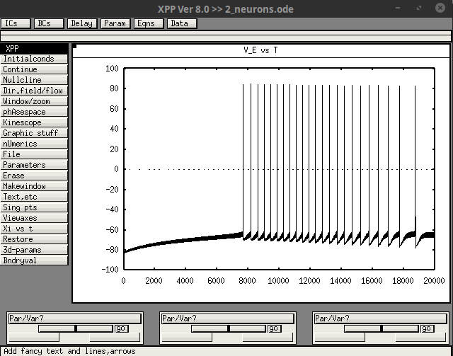
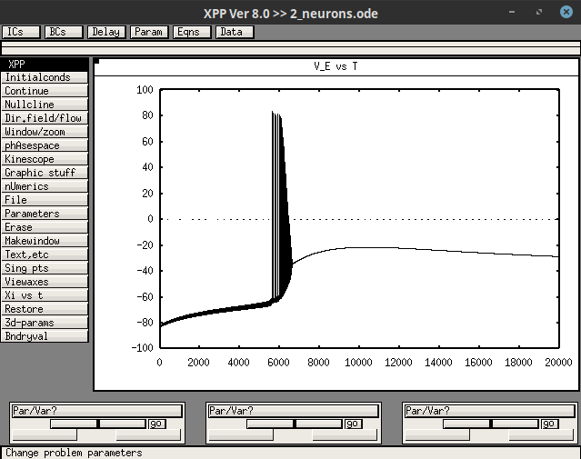

Usage
We give here XPP files corresponding to the simulations shown in Figure 5 of https://www.jci.org/articles/view/142203. Initial condition and parameter value files for the different conditions are given in the folders "ic" and "par". From the folder containing "2_neurons.ode", type the commands below in a terminal and then click on "Initialconds", "Go".
Control condition
xppaut 2_neurons.ode -parfile par/1.0.par -icfile ic/1.0.ic

FHM-3 mutations of NaV1.1
xppaut 2_neurons.ode -parfile par/6.0.par -icfile ic/6.0.ic
